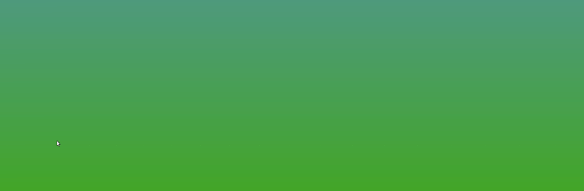

Fast launcher workflow
Quick access to your core apps, work surfaces, and utilities without visual noise or startup drag.
A dock that adapts to your workflow.
Fast, customizable, and extensible dock application -- fully written in Python, with built-in applets and full Linux desktop integration.

Docking combines launcher speed, desktop awareness, and a modular widget system in one polished surface.
Quick access to your core apps, work surfaces, and utilities without visual noise or startup drag.
Ship a dock that already knows how to show system status, weather, media, timers, notes, and more.
Adjust themes, sizing, behavior, and pinned item icons so the dock fits the desktop you already use.
Keep the dock where it belongs, visible when needed and out of the way when focus matters.
Built for Linux setups that span more than one desktop environment and more than one way of working.
Add your own widgets and behaviors without compromising the dock’s main runtime model.
Docking selects the best backend for the current session and falls back cleanly when a compositor does not expose every window-management feature.
MATE, Xfce, Cinnamon, KDE, GNOME Flashback
Running indicators, window actions, previews, workspace behavior, dodge/auto-hide, and desktop integration.
GNOME / Mutter 45+
Dock placement, window tracking, activate/minimize/close actions, previews, workspace switching, Show Desktop, and Alt+Tab hiding.
KWin / Plasma 6
Layer-shell placement, AT-SPI window tracking with titles, and workspace switching through KWin D-Bus. Window actions depend on what KWin exposes.
Current Muffin releases
Dock placement and read-only running, active, attention, geometry, and workspace state. Muffin does not expose window actions, previews, or change signals.
COSMIC desktop sessions
Native layer-shell placement with COSMIC toplevel, workspace, overlap, and preview protocol paths where available.
Niri compositor sessions
Layer-shell placement, window tracking with titles, previews, workspace switching, Show Desktop, idle time, and color picker - via native Niri IPC.
Wayfire compositor sessions
Layer-shell placement, window tracking with titles, activate/minimize/close actions, workspace switching, Show Desktop, visibility-based dodge, window picking, and color picker - via native Wayfire IPC.
Sway, labwc, river, Louvre-based, Jay, Miriway, Phosh / phoc
Dock placement, window tracking, actions, workspaces, previews, and idle time are enabled independently. Jay and Miriway require trusted-client configuration; phoc can provide native window thumbnails.
Treeland compositor sessions
Layer-shell placement, window tracking and previews, Show Desktop, and overlap-driven hiding. Left-edge overlap falls back while Treeland's current checker remains limited.
Nested and gaming sessions
Dock placement as an external overlay, including sessions without --expose-wayland. GameScope does not expose general window management to regular clients.
Safe launcher and applet mode
Docking remains usable without running indicators, previews, or workspace switching when no supported integration is available.
Filter the catalog by workflow and find the applets that make Docking more than a launcher: system controls, command launchers, media, notes, weather, privacy indicators, and folder-friendly utilities.
Showing 64 applets
No applets match that search.
Docking is open source and built for people who want control, extensibility, and a clean code path into custom workflows.
git clone https://github.com/edumucelli/docking.git
cd docking
python3 -m venv --system-site-packages .venv
source .venv/bin/activate
pip install -e ".[dev]"Docking gives you control without getting in your way.
Docking supports X11 and Wayland through backend-specific integrations: full X11 support, GNOME / Mutter via the companion Shell bridge, KDE Plasma 6 through the native KWin backend, COSMIC through native Wayland protocols, wlroots-style compositors via layer-shell and advertised protocols, and reduced mode when compositor integration is unavailable.
Yes. Docking has an extensible applet system. Each applet is a Python package with a state, render, and applet module. You can add custom widgets and behaviors without modifying the dock's core runtime.
Yes. Docking supports X11 and Wayland. Native Wayland support is selected per desktop: GNOME Shell bridge, KWin, COSMIC protocols, wlroots layer-shell/protocol paths, or reduced mode when needed.
Yes. Docking is licensed under GPL-3.0-or-later and fully open source. The code is hosted on GitHub and contributions are welcome.
Install a build, star the project, and shape a Linux dock that fits the way you actually work.